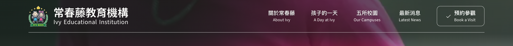
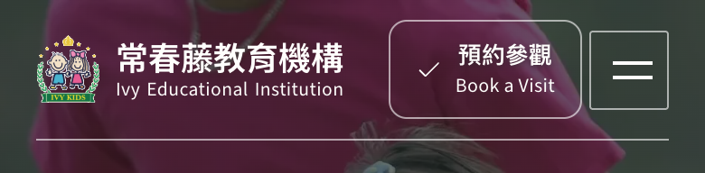
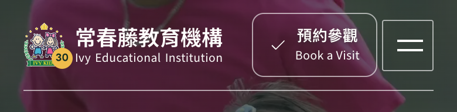
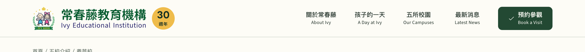
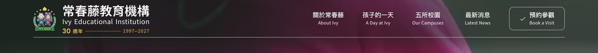
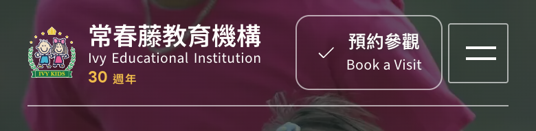
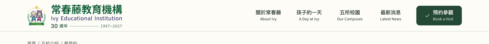
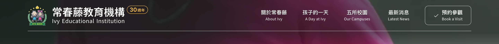
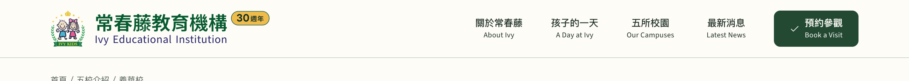
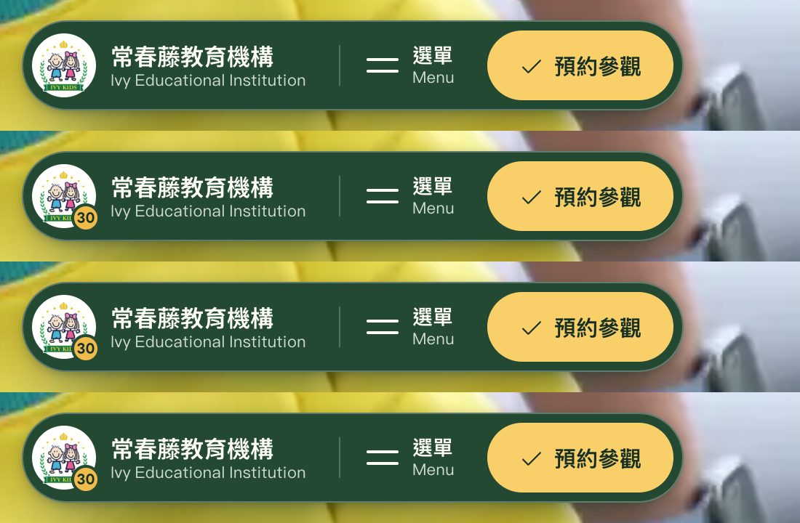

頁首品牌的 30 週年版：三個方向
1997 年在高雄創立，2027 滿 30 年。校徽是 PNG 動不了，週年記號只能掛在字標旁邊；三個方向都不動「常春藤教育機構／Ivy Educational Institution」兩行本身，只決定「30 週年」放哪裡、長什麼樣。
- 金色是唯一的新顏色。站內已有
--gold（孩子的一天 kicker 用的那個），週年記號全走它，不另調色。壓在首屏影片上時用鏤空描邊，捲動後與分校頁的淺底改成實心金、深綠字。 - 「30」用標題字型 LINE Seed Bold，「週年」用品牌字型 Noto Sans TC 600。「週年」不在品牌字型子集裡，另切了 1.8 KB 的
noto-sans-tc-600-anni.woff，靠 unicode-range 分流。 - 收合後的膠囊三個方向共用同一招：白色圓徽章右下角一顆金色「30」小點。手機頁首放不下印章與外掛籤，a／c 也退成同一顆小點，b 保留「30 週年」第三行。
方向




最像一枚「紀念章」，30 是視覺主角；淺底時實心金圓和校徽的金冠、黃星同族。
品牌區從 280px 變 350px，把字標推離校徽，讀起來是三件東西並排；手機放不下，退成小點。




最安靜，也是唯一寫出年份的一版；寬度不變、和上兩行同欄對齊，手機也保留得住「30 週年」。
字標高度 60→77px，三行疊在一起密度高；金色細字壓在影片亮幀上會弱。




最省空間，字標本身完全不動，記號小而明確、像個貼紙，活動結束撕掉最不痛。
最不「慶祝」，遠看只是一個小黃點；掛在欄位外側，900px 以下會頂到 CTA，退成小點。
膠囊與手機

定案後把選中的那組併進 studio.css 的 header 段落，DOM 改寫進 index.html，其餘連同 ?anni= 參數一起刪掉。